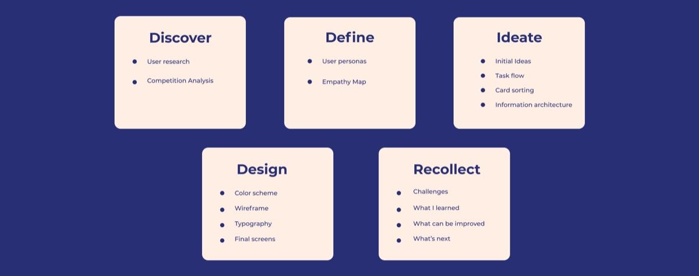
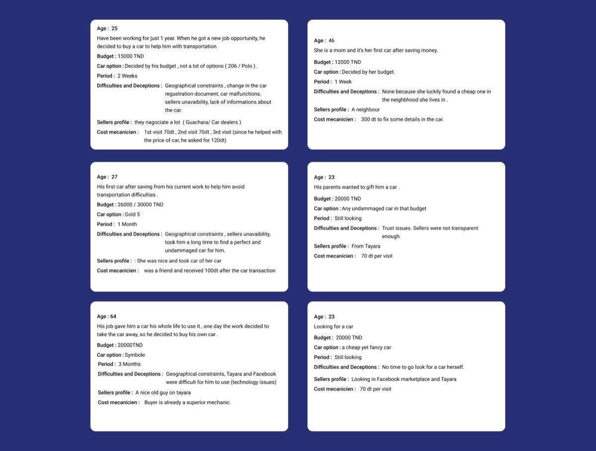
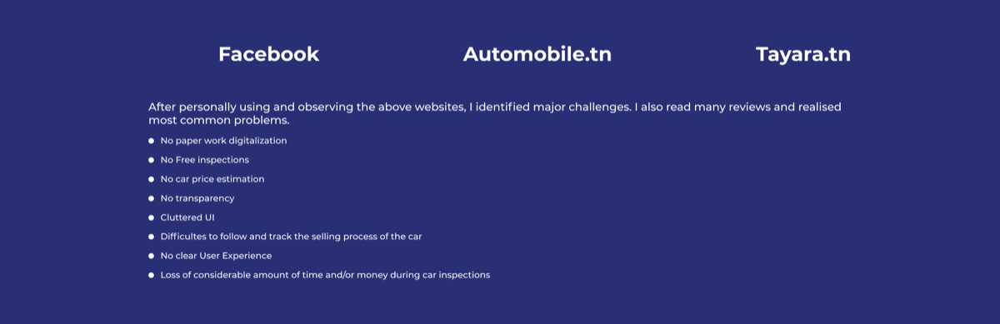
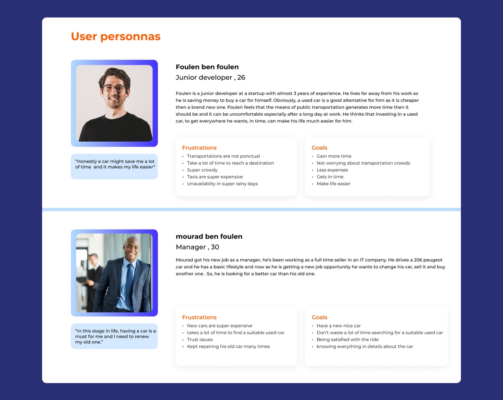
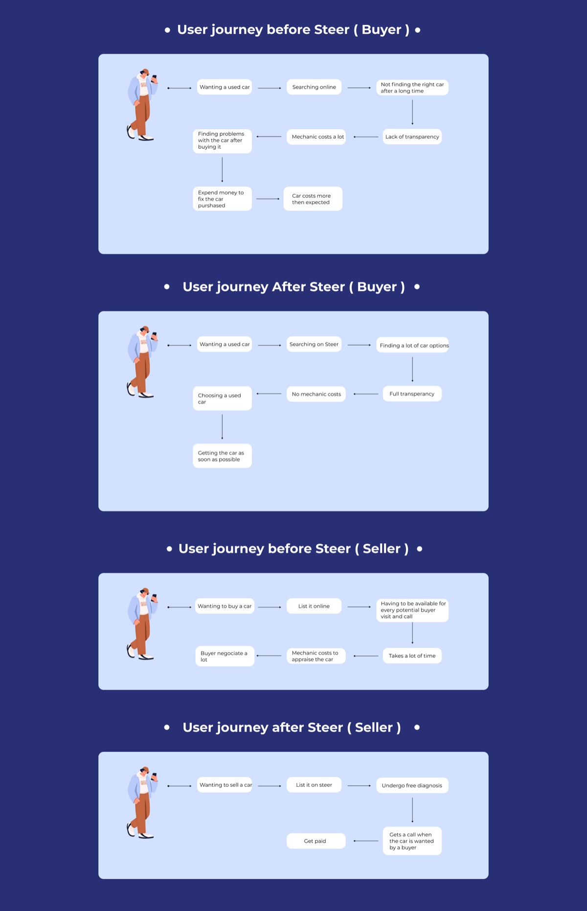
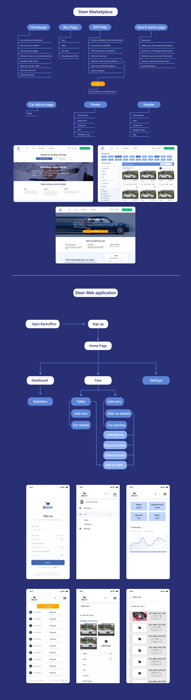

01 Intro
While taking on the Chief Product Officer role at Steer, I had the opportunity to build the corporate web application, the pitch, and the overall visual identity from the ground up. We started by creating an identity for the startup, focusing on market research and shaping the entire product — problem statement and solution.
Once we understood the market, we brainstormed ideas and I produced low-fidelity designs. We validated those, moved to high-fidelity, then I worked alongside the developer and followed every step of the build. Using Miro and Figma, I ran a multi-step design process to uncover problems, generate ideas, and communicate them in both low- and high-fidelity.
02 About the project
The used-car market poses challenges and opportunities for new and established players alike. New cars keep getting more expensive in emerging countries, while used cars aren't always reliable. To address this, we built a C2C marketplace where buyers can access detailed, verified information about used cars — paired with a pricing algorithm and added services such as warranties and financing from our partners.
We also offer a B2B solution for used-car professionals: a web platform providing digital services including car inspections, vehicle health analysis, stock management, and digital marketing.
03 The problem
Buying and selling used cars takes a lot of process and time, and you can't always trust the mechanics. There are many red flags, and it costs real energy to find the right car. There's a deep lack of transparency, inspections cost money every time you go to see a car, and you have to dig hard to understand each car's fair price.
04 Solution
A highly scalable digital inspection technology, combined with a cutting-edge pricing algorithm, is the foundation of the platform. It enables efficient, accurate inspections that ensure quality and reliability. On top of that, the marketplace offers advanced customer services for a seamless experience — convenience, reliability, and support for both buyers and sellers.
05 Design process

06 User research
Used cars are a significant part of the market, yet the space is full of issues: unreliable mechanics, inaccurate pricing, and incomplete listing details. Sellers sometimes provide false information, which erodes trust — especially for first-time buyers. To address this, I built a survey for people who had bought, or were considering buying, a used car, as well as those seeking a transparent diagnosis for their vehicle. I designed it to gather input from 20 participants to define our persona.

07 Competitor analysis

08 User personas

09 User journey

10 Assets & user flow
The work shipped across a corporate page and the Steer web application. Explore the design files:
